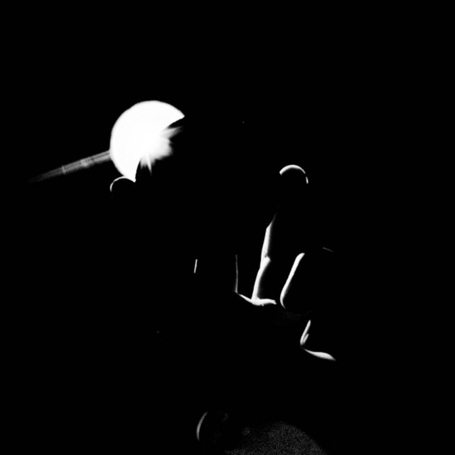

Архив фотографий, визуальный дневник, в общем называйте как хотите
Почему Shadowplay? Потому что Joy Division. У города в котором я живу вайб этой группы, у жизни периодически вайб этой группы, на фотках это влияние тоже отразилось.
А еще потому что фотография это рисование светом. Об этом любят говорить и звучит конечно красиво, но прежде всего свет и тень определяют друг друга. Это все же их игра.
Такие вот пирожки с котятками
